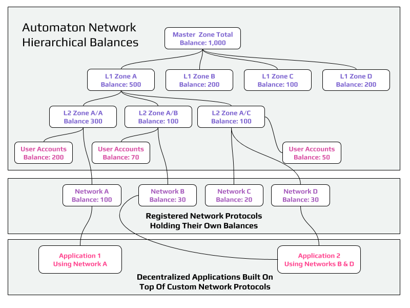
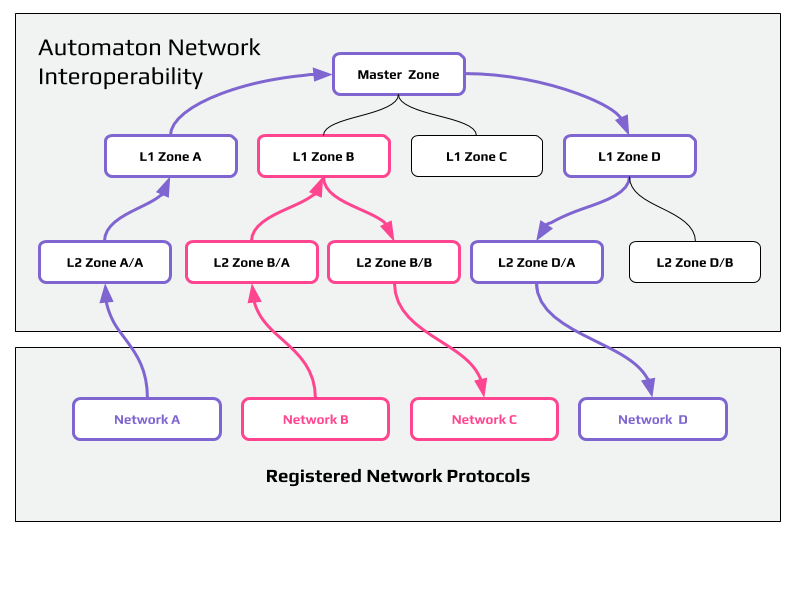

Welcome to Automaton
Automaton - noun /ɔːˈtɒmət(ə)n/
a self-operating machine, or a machine or control mechanism designed to automatically follow a predetermined sequence of operations, or respond to predetermined instructions.
a peer-to-peer operating system
Automaton is a peer-to-peer operating system for running scalable decentralized applications and connecting networks through its standardized protocols.
Our Vision
Automaton envisions a decentralized Internet created by the people for the people in order to freely and privately communicate, play, transact, collaborate and organize at scale.
Automaton Core
The engine that runs everything
Provides all the basic components necessary to launch peer-to-peer nodes running custom network protocols. Components include command line interface console, simulated test network framework, cryptographic hash functions, digital signatures, secure random number generation, protocol message definitions, file storage, memory-mapped files, network, scripting, state, consensus and discovery algorithms.
Automaton Playground
A visual programming tool
Built on top of Automaton Core, it will provide templates for peer-to-peer network architectures and enable people to utilize the building blocks of Automaton Core to visually design and build their own solutions from scratch.
Automaton Network
A self-governed peer-to-peer network of networks
Openly register your own custom network protocol and have it interact freely with the other registered networks while benefiting from the security of the main network.
Automaton is a network of networks forming a tree structure where each network works like a side chain of its parent network. The main network layer itself consists of separate networks, which we call zones. At the root of the entire network tree is the master zone. Zones have a predefined storage capacity and validator slots. Whenever that storage capacity is exhausted, the zone’s data is split into child zones. This architecture results in fast synchronization times and exponential scalability, which are imperative for mass adoption.
A key differentiating feature of the Automaton Network is the ability for people to define, register and launch their own peer-to-peer networks. This registration is done within a zone of the main network using Smart Protocols. Once a Smart Protocol is registered, it is interoperable by design, which makes it available to communicate with other protocols and applications built on top of it.
In order to secure and validate the state of the network, Automaton implements a novel solution. Using a mining application based on the King of the Hill algorithm, validator candidates compete to produce a key of higher difficulty. Every validator slot in each zone has its own independent cumulative difficulty, which is increased every time it’s taken over. This can happen only with a key having higher difficulty. Once a validator slot is taken over, the previous validator is kicked out of the zone, but does not necessarily lose their validating rights. Instead, evicted validators are bumped down to validator slots in one of the children zones when available. As the network grows, so does the difficulty of earning a validator slot. However, as the number of zones grows exponentially, so will the amount of available validator slots.
It is worth noting that targeting and attacking the network is not an easy task. For attackers to gain control of a single zone, they would have to generate more keys than the whole network since its inception in order to get high enough difficulty to replace more than 50% of the slots. This would be like having to mine every single block in a proof-of-work blockchain in order to take it over. Moreover, attacking and targeting a specific zone will be even harder in practice, because whenever a miner earns a validator slot, the zone in which they can register to operate is automatically assigned by the mined key. As a result, all miners in the world compete for all the available zones and custom protocols.
Automaton Network is self-governed, meaning that the parameters defining how the main network protocol operates is managed by the community itself. For example storage capacity or number of validator slots per zone could be modified through a formal proposal and voting mechanism.
The network is powered by its own token, which is used to register custom network protocols, rewarding validators, and executing transactions. Parent networks are always aware of the balance held by its children. While processing transactions token balances do not need to leave a zone unless its destination is outside its entire tree.

Problems Automaton is solving
Rapid Research & Development
To accelerate innovation, researchers of distributed consensus need to be able to test and analyze their theories. However, it is currently difficult to bootstrap and launch a new peer-to-peer network protocol from scratch, as it means recruiting people to run the researcher’s software in a test network. Then each time a problem occurs, hard forks and updates need to be organized and propagated.
Automaton provides a development framework and tools for participants to design, build, test and launch peer-to-peer protocols, applications and networks. With Automaton Core for example, researchers can instantly launch a simulated test network of 100,000 peer-to-peer nodes without relying on any external resources.
Usability
Automaton will provide a standard programming interface to access any application, service or peer-to-peer network it hosts. Such standardization makes it possible for anyone to create custom add-on solutions at the application level. This creates a healthy, competitive environment in which user experience designers and developers can iterate and improve or create variations of front-end user interfaces. End users can then choose the most optimal interface to fit their needs while accessing the same underlying networks and protocols.
In a nutshell Automaton fosters usability by giving developers numerous options to compete and improve core, protocol and application layers, which naturally leads to the best end results.
Decentralized Collaboration & Governance
Forking debates cause endless arguments, price swings, and confusion. The inconvenient truth is that most supposedly decentralized networks are actually controlled by a handful of developers. We often hear that miners are free to choose the fork they accept, but unfortunately the rest of the stakeholders have little say in the matter. Serious market manipulation can occur as a result. All of this breaks from the spirit of decentralization.
Automaton introduces a novel concept, the King of the Hill algorithm, which effectively distributes authority and decision making power as it allows people to earn non-transferable voting rights through pool-resistant mining. As a result communities can achieve a fair and scalable decision making process. This empowers community participants to continuously improve projects by organizing, funding and operating them with defined budgets and milestones. The outcome is that King of the Hill algorithm enables the Automaton community to efficiently manage a, global, communal treasury, which lays the foundation for truly decentralized collaboration and governance.
Scalability
Achieving high scalability in peer-to-peer networks is not just about transaction throughput. You could have millions of transactions per second, but when it takes a new user one month to synchronize and validate the critical data coming from the rest of the network, the user is stuck unable to interact with the network and the problem remains unsolved. Comparatively, Automaton Network houses data in separate cryptographically verifiable zones and users sync only the data in the zones they need, without compromising the security of the entire network. As a result synchronization time and bandwidth needed are drastically reduced. A new Automaton Network user can have their node in sync and ready to transact in seconds.
Interoperability
Peer-to-peer networks typically reach consensus independent of one another and can not automatically exchange information. Solving interoperability across the largest peer-to-peer networks is a top priority for Automaton, because it unlocks tremendous value. As Metcalfe’s law implies, connecting separate networks increases the value of the resulting larger network by orders of magnitude.
In Automaton Network all registered protocols are interoperable by architectural design. Protocols are registered in a specific zone, which is their parent. All zones except for the master zone have parents and form a tree structure (see diagram). When a network wants to communicate with another network, it sends a message that gets routed through the shortest path between the zones until it reaches its final destination.

Innovations
Smart Protocols
Standardized Interoperability
Automaton Smart Protocols are a set of formally specified messages and coded instructions defining how peer-to-peer nodes communicate with each other and form a network. They are powered by the Automaton Core engine.
Typically when peer-to-peer protocols evolve, their documentation stays behind and becomes irrelevant. However, the self-documenting nature of Automaton’s Smart Protocols allows them to serve not only as the node instructions, but accurate up-to-date developer documentation as well.
Smart Protocols eliminate the need to download and install new software in order to run a peer-to-peer node and join a network. Instead all that is needed is the Smart Protocol’s formal specification. This defines the instructions which can be received and processed by the network. Instructions can be sent to the network by anyone, including nodes running other networks. As a result networks running Smart Protocols are interoperable by design.
King of the Hill
Pool-Resistant Consensus
Blockchain, considered the most secure peer-to-peer technology is being compromised due to the centralization of mining and staking pools. Automaton introduces a novel concept, King of the Hill algorithm, which is pool-resistant by design. It effectively distributes authority and decision-making power by allowing people to earn non-transferable voting rights through mining. This process results in exponentially more decision makers participating in critical events that affect the network on an ongoing basis. The earned voting rights being non-transferable makes pooling obsolete and forces decentralization by default as the individual miners have no incentive to collude.
King of the Hill is what we envision to be used as the consensus mechanism securing each zone of the Automaton Network, as well as networks running Smart Protocols.